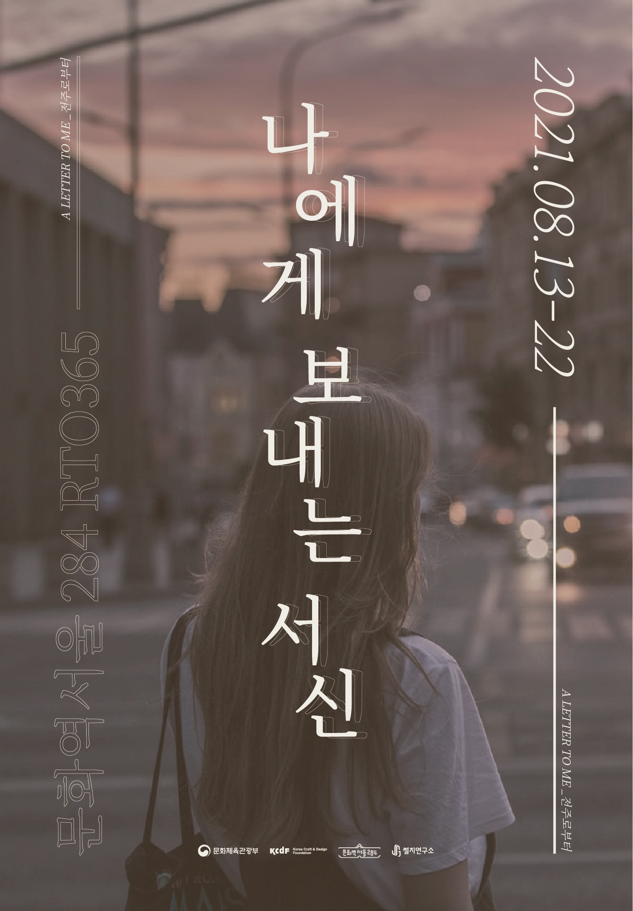

2021 RTO 365 문화장(場)의 두 번째 프로그램은
지역문화유산을 활용하여 다양한 프로그램을 선보이는 썰지연구소의 <나에게 보내는 서신>입니다.
전주는 예로부터 종이를 쓰는 양반이 많고, 깨끗하고 풍부한 물이 있어 한지 제작이 활발한 지역이었습니다.
한지장이 제작한 전주 한지 위에 나에게 보내는 이야기를 써내려가 보세요.
[전시/체험]
수많은 인파 속,
홀로 있는 기분을 느낀 적이 있나요?
첫 학교, 첫 직장, 첫 타향살이. 그리고 처음 맞는 요즘의 일상.
우리는 하루하루를 바쁘게 살아갑니다.
그러다 내 삶을 돌아보면 텅빈 하루, 정신없는 한 달, 사라진 일 년이 발자국처럼 찍힐 때가 있습니다.
언제 우리는 나만을 위한 시간을 내어줄 수 있을까요?
RTO365 <나에게 보내는 서신>에서는 나만의 오롯한 시간을 가집니다.
80분의 시간을 나만의 책상에서, 나를 위한 서신을 씁니다.
- 일시: 2021.8.13.(금)~2021.8.22.(일) 10:00~19:00 *월요일 휴관
- 장소: 문화역서울 284 RTO
- 예약 링크(서신키트 미포함): https://bit.ly/letter_to_me
- 예약 링크(서신키트 포함): http://bit.ly/letter_offline
[비대면 키트 배송]
코로나19로 현장 방문이 어려운 분들을 위해 서신키트를 배송해드립니다.
① 전주한지 편지지
1975년부터 한지를 뜬 전주 한지장 김인수의 한지에 고감한지의 인쇄, 재단이 더해져 탄생한 편지지이다.
② 문화연필 더존
1949년부터 생산되어 우리 추억 한 켠에 자리잡은 대표 국산연필인 문화연필 더존이다.
직접 연필을 깎은 다음 이야기 한 방울을 떨어뜨려보자.
③ 부용향
서신키트로 전하는 부용향은 조선 왕실이 사랑한 향이다. 카라영은 동의보감에 기록된 10가지 한방 재료와 비율로 부용향을 재현하였다.
④ 청태전
발효차 청태전은 삼국시대부터 전래된 우리나라 고유의 차다.
전주 티카페 자야가 이 순간에 어울리는 차를 골라 마음을 더한다.
이 외에도 서신키트에는 지우개, 연필깎이, 향꽂이, 편지봉투 등
나에게 보내는 편지에 온전히 집중할 수 있게 도움을 주는 물품들이 들어 있습니다.
- 신청기간: 2021.8.13.(금)~2021.8.31.(일)
- 체험비: 13,000원(배송비 포함)
- 예약 링크: https://bit.ly/letter_kit
[영상으로 둘러보기]